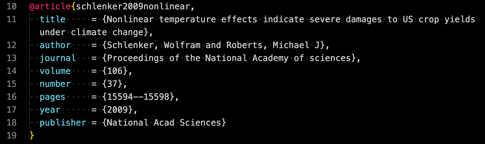

Format | Pros | Cons | Journal Submission Status |
|---|---|---|---|
PDF (LaTeX) | Extremely flexible; professional output | Slow compilation; requires LaTeX skills | Accepted (but journals require LaTeX source files |
PDF (Typst) | Fast; modern alternative | Still developing; limited ecosystem | Not accepted |
HTML | Fast; highly flexible for web sharing | Not designed for journals | Not accepted |
Word | Fast; widely used; simple for editors | Limited support for complex math | Accepted |
02-4: Writing a Journal Article Using Quarto
Citation and References
Begin by preparing a file that contains all your references. In your document’s YAML header, specify the bibliography file:
There are multiple formats and systems available for bibliographies, such as
- BibLaTeX/BibTex (.bib)
- CSL-JSON (.json)
- EndNote (.enl)
Here, we use a .bib file. If our bibliography file is titled bibliography.bib, the YAML header would look like:
Here is what an bib entry looks like:
@manual{R,
title = {R: A Language and Environment for Statistical Computing},
author = {{R Core Team}},
organization = {R Foundation for Statistical Computing},
address = {Vienna, Austria},
year = {2022},
url = {https://www.R-project.org/}
}.bib file consists of many of these bib entries.
The website of the journal in which the article published typically has a tool to export its bib file.
American Economic Review

Proceeding of National Academy of Science
Water Resources Research
American Journal of Agricultural Economics

- You can google an article for which you want a bib entry:
- Click on
Citeand then clickBibTexin the pop-up window.
To cite, use the following syntax:
@reference_nameto print “author names (year)”[@reference_name]to print “(author names, year)”[@reference_name_1; @reference_name_2]to print “(author names, year; author names, year)”[-@reference_name]to print just year
reference_name is the very first entry of a .bib file as in

You can change the citation and reference style using Citation Style Language. Citation style files have .csl extension.
Obtain the csl file you would like to use from the Zotero citation style repository.
Place the following in the YAML header:
- Then, citations and references styles will reflect the style specified by the csl file
Currently, the csl style is set to qje.csl (citation style language for The Quarterly Journal of Economics) as below
When knitting to PDF, the references will be positioned at the conclusion of the document, as documented (see here).
Append
# References {-}to the tail end of your.qmdfile. This creates a “References” section heading where all the citations will be listed.Including
{-}adjacent to the section header ensures theReferencessection remains unnumbered. This is particularly useful if you have activated section numbering in the YAML header withnumber-sections: true.Without
{-}, the “References” section would be automatically numbered, which is often not desired in academic and professional documents.